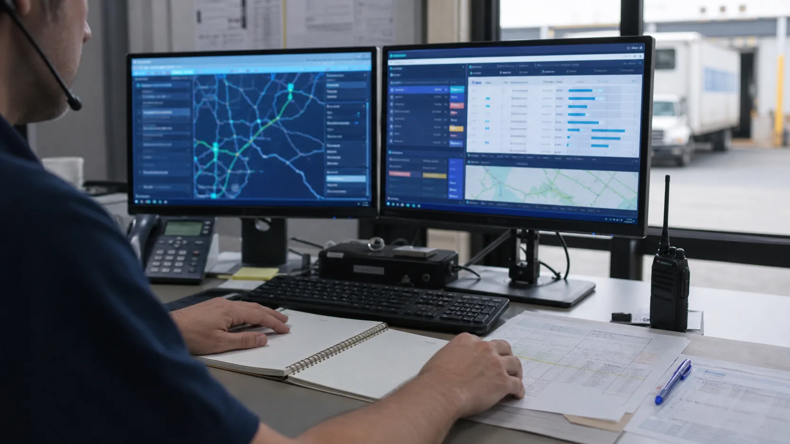

Información comercial clara.
Descripción, cantidad, valor, empaque y fecha disponible deben estar definidos por el comprador y su proveedor.
Coordinamos transporte marítimo o aéreo, documentos y preparación aduanal desde el punto de origen confirmado hasta la entrega en El Salvador.

La coordinación empieza con datos verificables de la operación. Shenzhen y Shanghai pueden ser referencias de origen, pero la salida se confirma según proveedor, carga y servicio disponible.
Descripción, cantidad, valor, empaque y fecha disponible deben estar definidos por el comprador y su proveedor.
El Incoterm disponible ayuda a delimitar recolección, entrega, documentos y costos que corresponden a cada parte.
Se compara contenedor completo o carga consolidada según volumen, manejo, calendario y costo total.
Puede evaluarse para cargas urgentes o de menor volumen, sujeto a naturaleza, peso, conexiones y espacio disponible.
La alternativa se construye con la información de origen y con lo que deberá ocurrir al ingresar a El Salvador.
Confirmamos datos logísticos disponibles, punto de origen, Incoterm y fecha de disponibilidad.
Coordinamos recolección, espacio, instrucciones, salida y cambios relevantes del transportista.
Preparamos el expediente disponible y alineamos el arribo con la gestión aduanal y el destino final.
La lista depende del producto y del modo de transporte. La revisión documental no sustituye la validación comercial del proveedor ni una inspección en origen.
Proveedor, comprador, producto, cantidades, valores, bultos, peso y dimensiones deben ser consistentes.
Documento de transporte, origen y permisos aplicables se revisan según la mercancía y la ruta.
Una condición comercial poco clara puede dejar sin coordinar la recolección, documentación o entrega en origen.
Diferencias en descripciones, cantidades o pesos pueden exigir correcciones antes o después de la salida.
Revisamos los datos disponibles, comparamos el modo de transporte y conectamos los hitos de origen, tránsito, documentación, aduana y entrega. No presentamos la coordinación logística como inspección, certificación o control del proveedor.
Conozca el detalle de transporte marítimo FCL y LCL y del apoyo en gestión aduanal.
La ruta final y sus requisitos se confirman con la información específica del producto y del proveedor.
Producto, cantidad, empaque, peso, volumen, ciudad de origen, fecha disponible e Incoterm. También conviene solicitar documentos comerciales coherentes con la mercancía.
Sí. La elección depende del volumen, peso, urgencia, naturaleza de la carga, disponibilidad y costo total de la alternativa.
Esta página no ofrece inspección ni certificación de proveedores. Networld coordina la operación logística y revisa la documentación disponible para preparar el transporte y la importación.
Shenzhen y Shanghai son referencias frecuentes, pero el punto de salida se confirma según la ubicación del proveedor, la carga y la alternativa de transporte disponible.